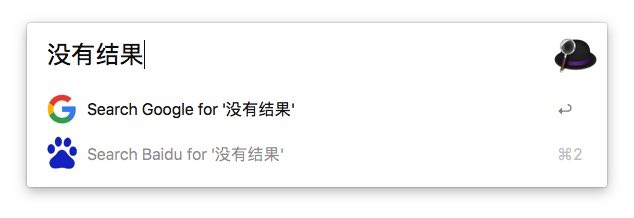
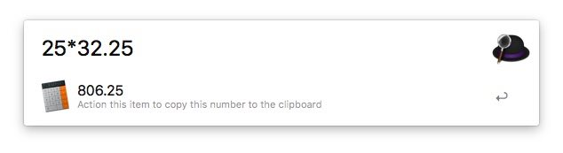
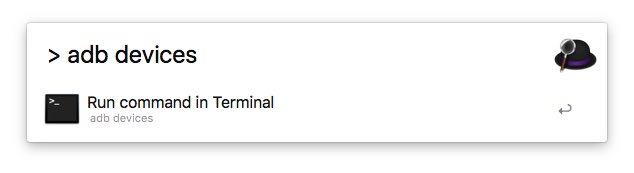
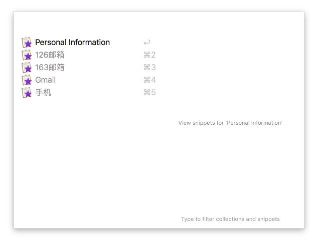
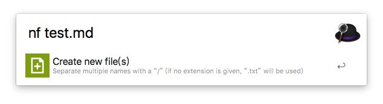
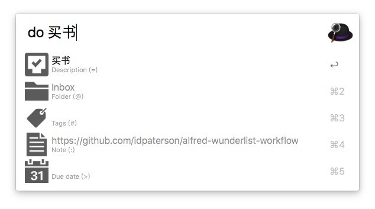
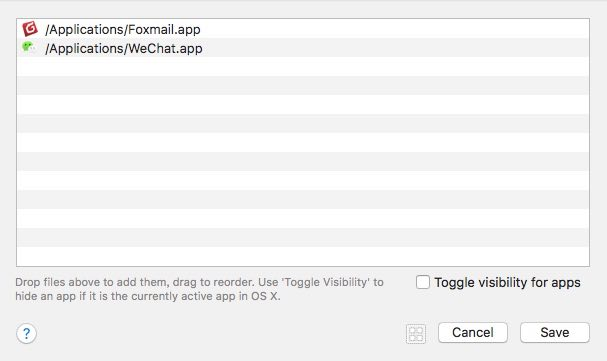
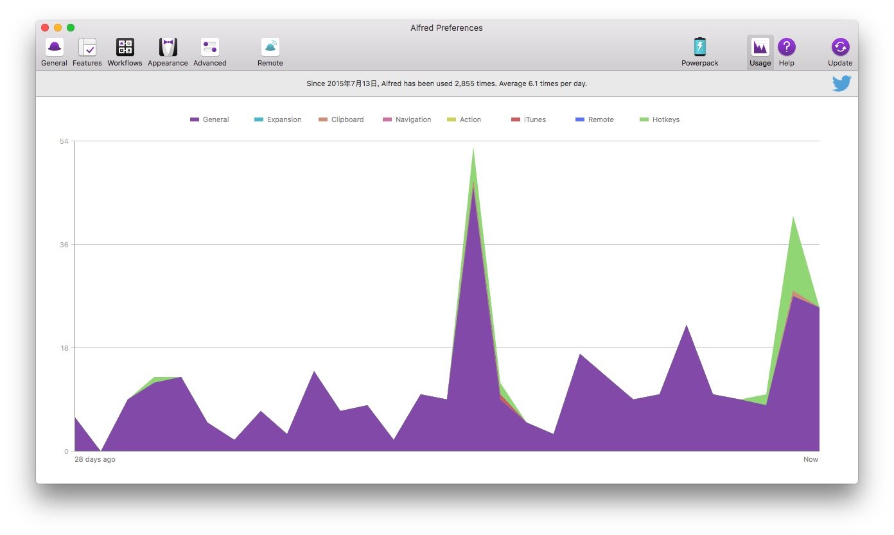

相信看过 macOS 系统必备软件推荐这类文章的同学，一定听说过 Alfred 这款软件。Alfred 是一款通过一个输入框快速完成文件搜索、自定义动作从而大幅提高工作效率的软件，可以看成 macOS 自带功能 Spotlight 的加强版。
网上讲 Alfred 的文章很多，Alfred 的许多深度功能可能我都还没用上。在这里只与大家分享一下我自己的一些用法，供大家参考。
写这篇文章的时候，正好赶上万众期待的新的 MacBook 即将发布，对于第一次使用 Mac 的同学这篇文章应该会对你有所帮助，对于还没拥有 Mac 的同学，说不定你看了这篇文章一冲动就买了呢。
该文章已被少数派推荐为「Matrix 精选」，你可以点击这里查看。
目录
基本使用
Alfred 可以通过快捷键快速触发搜索输入框，我设置的快捷键是⌥+Space。Alfred 本身是免费的，但是想要用更高级的功能需要付费激活 PowerPack 功能。
基本文件搜索：输入关键字可以搜索电脑里的文件、程序、联系人、书签等，你完全不需要到对应的文件夹或者 Launchpad 里眼花缭乱的找到文件或程序再打开。在搜索结果中可以按
⌘+Enter打开文件所在的位置。当然你可以在 Alfred 的偏好设置中选择哪些内容在搜索结果中展示，可以搜索哪些路径下的内容。
无搜索结果时默认搜索：当没有符合关键词的搜索结果时，Alfred 会默认使用 Google、Amazon、Wikipedia 的网页搜索。为了更符合自己的使用习惯，我把它默认设置为 Google 和 Baidu 的网页搜索。（在偏好设置中的 Features-Default Results-Fallbacks：Setup fallback results 进行设置）
更多网站搜索（Web Search）：软件自身内置了一些 Google、Twitter 等搜索，基本上都是一些国外的服务。为了更接地气，我添加了如下图所示的一些网站的搜索。图中的锁形标志代表了搜索结果的网页使用了 HTTPS。
添加自定义的搜索项也很简单，只需要知道对应网站的搜索 URL 并添加到偏好设置中的 Features-Web Search 中即可。比如：
- 百度搜索的 URL 是：
http://www.baidu.com/s?wd={query} - Appshopper 搜索的 URL 是：
http://appshopper.com/search?search={query}
添加的时候可以设置一个快捷键，比如百度搜索设置为
bd就可以在呼出 Alfred 时，输入『 bd 』加空格，并输入要搜索的关键词，敲击回车，即可打开网页搜索到对应的内容了。从上面举的两个例子，应该能看出
{query}就是要搜索的关键词，这样只要你知道某网站一个搜索结果的 URL，这个网站的搜索 URL 你就知道，自然就可以添加到 Alfred 中了。- 百度搜索的 URL 是：
奇思妙用
除了基本的搜索功能，Alfred 还内置了一些常用的小功能。以下列出几个我常用的，大概按我的使用频率由高到低排序。
如果你恰好需要计算一个简单的算式，可以直接在 Alfred 的搜索框中输入算式，Alfred 就会显示出计算结果。
Alfred 可以作为一个迷你的播放器，调用 iTunes 播放音乐。我设置的快捷键是
⌥+⌘+Enter，然后直接输入歌曲／歌手／专辑名称，回车后就可以播放了。同样你也可以在调出 Alfred 搜索框后输入itunes，也可以打开迷你播放器。
Alfred 中内置了一部分系统功能的命令，可以通过自定义的关键字触发，如下图。举两个例子，在 macOS 中想立即锁定自己电脑进入输入密码的界面，除了通过系统自定义的触发角功能，可以在 Alfred 的搜索框中输入
lock来锁定；下载安装了多个 dmg 程序安装包，但每个程序的 dmg 安装包都加载在了电脑上，如果一个个弹出，费时费力，可以在 Alfred 的搜索框中输入ejectall直接弹出所有挂载的磁盘。

遇到不懂的英文单词，调起 Alfred 的输入框输入
dic+空格+单词即可调用 macOS 内置的词典查询单词的释义，按回车进入词典。

搜索框中直接输入
>，并在之后输入命令，就可以调用「终端」程序，并运行命令。例如，在搜索框中输入下面的命令可以查看通过 adb 连接上的安卓设备：adb devices
记录多个剪贴板历史：我设置的快捷键是
⌥+⌘+C，打开后可以查看最新所有的剪贴板历史。
在进入
⌥+⌘+C后，第一项是「All Snippets」，在其中可以设置一些常用的需要输入的字符，比如邮箱，这样在登录、注册时就不需要重复输入复杂的邮箱地址了。
注：6 和 7 使用频率比较低的原因是相比其他竞品，Alfred 的调用更加复杂，呈现形式上不够直观，在这两个需求上我更喜欢 Paste。
进阶使用
在 Alfred 中有一个 Workflows 的 tab，用上这个，你才会发现 Alfred 的强大。简而言之，Workflow 就是把你想干的搜索的事，通过程序代码编写成一个流程化的东西，之后你只需要每次调用就行了。网上有很多分享的 workflow，可以参考 Alfred 2 Workflow List 、Packal 这两个网站。软件本身的功能是固定的，但提供的这种可扩展的能力却可以让 Alfred 完成更多不可思议的操作。
搜索类
这类 workflow 主要是搜索某些软件或网站的内容，但相比 Web Search，可以直接在 Alfred 中显示搜索结果，一键即可打开搜索内容的详情页。
iTunes Store Search
搜索 iTunes Store 里的 app、song、album、podcast 等内容，直接在 Alfred 中显示搜索结果，进一步可在 iTunes Store 里查看。你可在 workflow 的设置中自定义 iTunes Store 的搜索地区和显示的搜索结果的最大数量。
Mac App Store Search
与 iTunes Store Search 类似，只不过这个是在 Mac App Store 中进行搜索。类似的还有 iBooks Search，在 iBooks Store 中进行搜索。
Douban
快速搜索豆瓣上的电影、音乐、图书，并返回相应搜索结果。
Dianping
快速搜索大众点评上的商家店铺，可以自定义搜索的默认城市。
知乎
快速搜索知乎上的问题、话题、人，还可返回知乎日报文章列表。
工具类
这类 workflow 主要是满足某些生活、工作、学习中经常用到、但又及其繁琐的需求。
快递查询
快速查询快递利器，可对查询结果一键复制，可记录查询历史。
Youdao Translate
调用有道翻译单词、词组、句子，中英互译。
NewFile
在 Finder 当前目录下新建文件，默认扩展名是 txt。有两种形式：仅创建和创建并打开。如果习惯于 Windows 的右键新建某种格式的文件，这个应该很方便。
Resize Image
快速对 Finder 中当前选中的图片等比例调整尺寸。输入的数字代表想要调整的图片宽度。
Shorten URL
把已有的较长的链接转换成短连接并复制到剪切板。
Toggle Hidden Files
快速显示/隐藏系统中的隐藏文件。虽然在 macOS 10.12 中已经可以通过快捷键⇧+⌘+.来完成上述操作，但这个快捷键可能你会忘记，使用 workflow 可能更加方便快捷。

软件辅助类
这类 workflow 主要是给已安装的软件提供一个辅助功能。但一般情况下这些软件自身都会带有一些全局快捷键或者工具条，软件原生的功能可能支持的更好，通过 Alfred 来实现可能并不能获得最好的效果，在此仅举一例。
- Things 在 Things 中添加一个 TODO。 
自己动手，丰衣足食
上文中提到的所有 workflow 其实都是 Alfred 的用户们自己创造的，有的简单，有的复杂。对于初学者来说，即使你不懂代码，你也可以通过简单的操作来做一个 workflow，从而提高自己的工作效率。
在此拿我自己的实际情况举一个非常简单的例子。每天开始工作的时候，我需要在 Teambiton 中查看最新的项目进展，在微信中与同事沟通，在 Foxmail 中收发邮件。所以我需要在进入工作状态后，打开 Teambiton 网页、微信 app、Foxmail app。这是一个较为固定的操作，但如果手动完成，其实很麻烦，可以借助一个 workflow 来解放劳动力。创建这个 workflow 大概分为以下几步：
添加 workflow：Alfred 中内置了一些固定的模板，可以选择通过快捷键打开多个文件；

填写 workflow 基本信息：包括名称、Icon 等；
除了打开多个文件，还要添加一个 Action：打开一个 URL；
配置 Keyword；
添加要打开的 app；
配置要打开的 URL。
workflow 创建完成后，在 Alfred 的输入框中输入设置好的 keyword，敲回车，一切搞定。
总结
Alfred 的偏好设置中特别设置了一个「Usage」tab，在这里可以查看 Alfred 的使用频率，了解这款工具到底对你的工作效率有多大的改变。在用 Alfred 的用户不妨去看一看。

Alfred 的扩展性很高，所以他的玩法还有很多。但 Alfred 说到底是一款工具，工具的目的就是为了解决人的某些需求的。如果变成一个庞然大物，我相信不应该是一个工具的初衷。所以找到适合自己的用法才是最重要的，切忌不要被工具绑架了自己。
如你有更多有趣实用的玩法，欢迎与我交流。
如果你觉得这篇文章对你有所帮助，欢迎请我喝杯咖啡，感谢你的支持😁